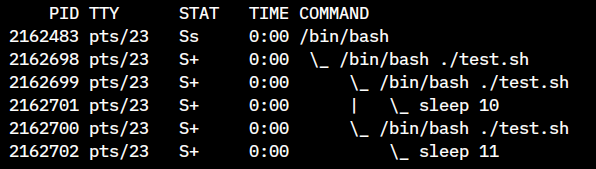
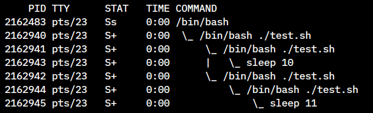
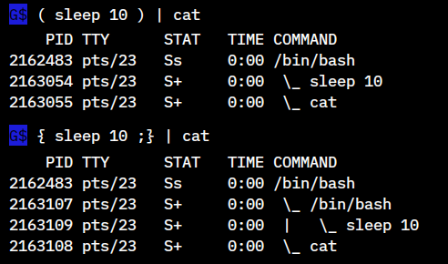

Job Control
터미널에서 단순히 한번에 하나의 명령만 실행시킬 수 있는 것이 아니고 & 메타문자를 이용해 background job 을 생성함으로써 멀티태스킹을 할 수 있습니다. 가령 인터넷에서 파일을 다운로드하는 job 을 background 로 실행시켜놓고 동시에 vi 에디터로 파일 수정 작업을 할 수 있습니다.
& 를 이용해 명령을 실행시키면 parent process 는 child process 가 종료될 때까지 기다리지 않고
바로 다음 작업을 할 수 있게 됩니다.
Job id 와 Job specification
$ curl -sO http://cdimage.ubuntu.com/.../ubuntu-mate-15.10-desktop-amd64.iso &
[3] 26558
명령을 & 메타문자를 이용해 background 로 실행시키면 결과로 job id 와 process id 를 보여줍니다. 위의 예에서 [3] 부분이 job id 에 해당되고 26558 은 process id (pid) 에 해당됩니다.
만약에 kill 명령을 사용해 job 에 신호를 보낼때 job id 를 사용한다면 pid 와 구분할 수 없게 됩니다 ( 둘 다 숫자이므로 ). 그래서 job id 대신 job specification ( 줄여서 jobspec ) 을 사용하는데 이때 jobspec 은 job id 앞에 % 문자를 붙여서 만듭니다. ( 예: %3 )
이 jobspec 은 job control 에 사용되는 명령들 ( jobs, bg, fg, wait, disown, kill ) 에서 사용됩니다. jobspec 을 이용해 kill 명령으로 신호를 보내면 같은 pgid ( process group id ) 를 갖는 프로세스 들에게 모두 전달되므로 만약에 child process 가 생성되어 실행 중이라면 함께 종료하게 됩니다.
Jobspec 과 pid 가 다른점
pid 는 개별 프로세스를 나타내지만 jobspec 은 파이프로 연결된 모든 프로세스를 포함합니다.
# 파이프로 연결된 경우 마지막 명령의 pid 를 표시
$ sleep 10 | sleep 10 | sleep 10 &
[1] 12782
# jobspec 은 파이프로 연결된 3 개의 프로세스를 모두 포함.
$ jobs %1
[1]+ Running sleep 10 | sleep 10 | sleep 10 &
# pid 는 개별 프로세스를 나타냄.
$ ps f
PID TTY STAT TIME COMMAND
...
1643 pts/10 Ss 0:00 bash
12780 pts/10 S 0:00 \_ sleep 10 # pid
12781 pts/10 S 0:00 \_ sleep 10 # pid
12782 pts/10 S 0:00 \_ sleep 10 # pid
...
jobs
jobs [-lnprs] [jobspec ...] or jobs -x command [args]
현재 job table 목록을 보여줍니다. -l 옵션을 주면 process id 도 함께 보여줍니다. job id 옆에 보이는 +, - 기호는 jobspec 에 사용되며 %+ 는 current job 그러니까 가장 최근에 background 상태가된 job 을 나타내고 %- 는 previous job 을 나타냅니다. fg 명령을 사용해 이동함에 따라 + , - 위치도 바뀌게 됩니다.
jobspec %% 은 %+ 와 동일한 의미를 가집니다.
$ vi 111 &
$ vi 222 &
$ vi 333 &
$ jobs # vi 로 3 개의 파일을 열고난 후의 상태
[1] Stopped vi 111
[2]- Stopped vi 222 # previous job
[3]+ Stopped vi 333 # current job ( 가장 최근 job )
$ fg %1 # %1 로 이동
# vi 화면에서 ctrl-z
$ jobs
[1]+ Stopped vi 111 # current
[2] Stopped vi 222
[3]- Stopped vi 333 # previous
$ fg %2 # %2 로 이동
# vi 화면에서 ctrl-z
$ jobs
[1]- Stopped vi 111 # previous
[2]+ Stopped vi 222 # current
[3] Stopped vi 333
-p 옵션은 job table 에서 pid 만 표시합니다.
파이프로 연결된 명령 그룹일 경우 첫번째 pid 만 표시됩니다.
fg
fg [jobspec]
현재 background 에 stopped 또는 running 상태에 있는 job 을 foreground 로 실행하고 current job 으로 만듭니다.
그러므로 이후에 ctrl-z 로 stopped 되었을때 job table 에는 + 로 표시됩니다.
jobspec 을 인수로 주지 않으면 current job ( + 표시된 job ) 이 사용됩니다.
bg
bg [jobspec ...]
Ctrl-z ( SIGTSTP ) 에 의해 현재 stopped 상태에 있는 background job 에 SIGCONT 신호를 보내 background running 상태로 만듭니다. jobspec 을 인수로 주지 않으면 current job 이 사용됩니다.
suspend
suspend [-f]
suspend 명령을 실행하는 shell 은 이후에 SIGCONT 신호를 받기 전까지 중단됩니다.
login shell 에서는 사용할 수 없으나 -f 옵션을 이용하면 override 할 수 있습니다.
disown
disown [-h] [-ar] [jobspec ...]
disown 은 "이 job 은 내것이 아니다" 라고 선언합니다. job 이 종료되는 것은 아니고 결과로 job table 목록에서 삭제되어 더이상 control 할 수 없게 됩니다. 터미널 프로그램을 종료시킬때, 또는 login shell 에서 exit 시에 SIGHUP 시그널에 의해 job 이 종료되는 것을 방지할 수 있습니다 ( shopt -s huponexit 옵션이 설정되어 있을경우 ). -h 옵션도 동일한 역할을 하지만 job table 에는 계속 남아있으므로 control 할 수 있습니다.
wait
wait [-n] [jobspec or pid …]
Background 로 실행되는 job 이 종료될 때까지 기다립니다. child 프로세스에 해당할 경우만 wait 할 수 있습니다. 인수로 jobspec 이나 pid 를 주게되면 해당 job 이 종료될 때까지 기다린 후 종료 상태 값을 리턴합니다. 인수 없이 실행하면 모든 프로세스를 기다리며 종료 상태 값으로는 0 을 리턴합니다. 특정 작업이 완료된후에 다음단계로 진행해야 될경우 사용할 수 있습니다.
$!변수는 가장 최근에 background 로 실행된 pid 값을 나타냅니다.|파이프로 연결된 명령 그룹일 경우 마지막 명령의 pid 가 되며 전체 pipeline 이 종료될 때까지 wait 합니다.
#!/bin/bash
( sleep 1; exit 3 ) &
wait $!
echo $?
########### output ###########
3
---------------------------------------
#!/bin/bash
( echo start process 1...; sleep 3; echo end process 1.; exit 1 ) &
( echo start process 2...; sleep 2; echo end process 2.; exit 2 ) &
( echo start process 3...; sleep 4; echo end process 3.; exit 3 ) &
wait # 3 개의 background process 를 모두 기다림.
echo exit status: $?
########### output ###########
start process 1...
start process 2...
start process 3...
end process 2.
end process 1.
end process 3.
exit status: 0 # 종료 상태 값이 무조건 0 이 됨
사실 wait $! 형식은 프로그래밍 언어에서 fork 한후에 parent process 가 child process
를 기다리는 용도로 사용하는데요.
shell 에서는 기본적으로 명령을 다루므로 child process 가 실행되면
parent process 인 shell 이 자동으로 종료될 때까지 기다립니다.
따라서 위에서 첫번째 경우는 다음과 같이 background 로 실행을 안하는것 하고 차이가 없습니다.
( ps 정보도 같음 )
#!/bin/bash
( sleep 1; exit 3 )
echo $?
########### output ###########
3
--------------------------------
#!/bin/bash
echo main start ...
(
( echo start process 1...; sleep 3; echo end process 1; exit 1 ) &
wait $!
echo process 1 exit status : $?
) &
(
# 위와 동일한 것임
( echo start process 2...; sleep 2; echo end process 2; exit 2 )
echo process 2 exit status : $?
) &
wait
echo main end ...
########### output ###########
main start ...
start process 1...
start process 2...
end process 2
process 2 exit status : 2
end process 1
process 1 exit status : 1
main end ...
위의 예에서 보는 것과 같이 여러개의 background job 을 생성하면 각 프로세스의 종료 상태 값을 main 프로세스에서 알 수가 없습니다. 그럴땐 다음과 같은 방법을 사용해볼 수 있습니다.
#!/bin/bash
trap 'rm -f $tmpfile' EXIT
tmpfile=`mktemp`
number_of_jobs=10
do_job() (
echo start job $i...
sleep $((RANDOM % 5))
echo ...done job $i
exit $((RANDOM % number_of_jobs))
)
for i in $( seq $number_of_jobs ); do
(
do_job
echo job$i : exit status : $? >> $tmpfile
) &
done
wait
i=0
while read -r res; do
echo "$res"
let ++i
done < $tmpfile
echo $i jobs done !!!
########## output ##########
start job 1...
start job 2...
start job 3...
start job 4...
start job 5...
...done job 4
...done job 3
...done job 1
...done job 5
...done job 2
job3 : exit status : 4
job4 : exit status : 3
job1 : exit status : 1
job5 : exit status : 3
job2 : exit status : 0
5 jobs done !!!
Job control 관련 키
Ctrl-c
interrupt 신호 ( SIGINT ) 를 foreground job 에 보내 종료시킵니다.
Ctrl-z
suspend 신호 ( SIGTSTP ) 를 foreground job 에 보내 suspend 시키고 background 에 있던 shell 프로세스를 foreground 로 하여 명령을 입력받을 수 있게 합니다.
Input and Output
Input
입력은 foreground job 에서만 받을 수 있습니다. background job 에서 입력을 받게되면 SIGTTIN 신호가 전달되어 suspend 됩니다.
Output
출력은 기본적으로 현재 session 에서 실행되고 있는 모든 job 들이 공유합니다. 그러므로 background job 을 실행할때 제대로 redirection 처리를 하지 않으면 터미널로 출력되는 메시지들이 서로 섞이게 됩니다.
stty tostop명령을 사용하면 background job 에서 출력이 발생할시 suspend 시킬 수 있습니다.
Background job 은 subshell 에서 실행됩니다.
기본적으로 background job 은 subshell 에서 실행됩니다.
따라서 다음과 같이 { ;} 또는 ( ) 를 이용한 명령 그룹을 background 로 실행시키면
둘 다 동일하게 subshell 에서 실행됩니다.
$ AA=100; echo $$ $BASHPID; $ AA=100; echo $$ $BASHPID;
31653 31653 2036 2036
# { ... ;} & # ( ... ) &
$ { AA=200; echo $$ $BASHPID ;} & $ ( AA=200; echo $$ $BASHPID ) &
31653 9203 2036 5033
$ echo $AA $ echo $AA
100 100
그런데 명령 그룹을 함수로 만들어서 실행하면 { ;} 와 ( ) 는 차이가 있습니다.
( ) 는 subshell 프로세스가 하나 더 생성됩니다.
이것은 f1 () ( ... ) 형식은 실제 f1 () { ( ... ) ;} 와 같은 것이기 때문으로
sh 에서도 동일합니다.
#!/bin/bash
{ sleep 10; exit 3 ;} & # 둘 다 동일하게 subshell 프로세스가 하나만 생성된다.
( sleep 11; exit 4 ) &
wait

#!/bin/bash
f1 () { sleep 10; exit 3 ;}
f2 () ( sleep 11; exit 4 ) # 실제 "f2 () { ( ... ) ;}" 와 같은 형식
f1 &
f2 & # 따라서 f2 는 subshell 프로세스가 하나 더 생성된다.
wait

이것은 다음과 같이 파이프로 명령 그룹이 연결될 경우도 동일합니다.
# "{ ;}" 와 "( )" 둘 다 동일하게 subshell 프로세스가 하나만 생성된다.
{ sleep 10; exit 3 ;} | command ...
( sleep 11; exit 4 ) | command ...
-----------------------------------
# 함수로 만들어 실행하면 "( )" 를 사용한 f2 는 subshell 프로세스가 하나 더 생성된다.
f1 () { sleep 10; exit 3 ;}
f2 () ( sleep 11; exit 4 )
f1 | command ...
f2 | command ...
subshell 에서 실행할 명령이 1 개만 존재하면 ( ... ) 의 경우는
subshell optimization 에 의해 subshell 이 생성되지 않고 직접 해당 명령이 실행됩니다.
하지만 { ... ;} 의 경우는 subshell 이 생성됩니다.
이것은 bash 에만 해당하는 것으로 sh 에서는 생성되지 않습니다.

Subshell 에서 background 로 명령을 실행하면 job table 에 등록되지 않습니다.
$ { sleep 10 & sleep 10 & sleep 10 & } # { ... } 에서 실행한 명령들은
[1] 11558
[2] 11559
[3] 11560
$ jobs # job table 에 등록된다.
[1] Running sleep 10 &
[2]- Running sleep 10 &
[3]+ Running sleep 10 &
..........................................
$ ( sleep 10 & sleep 10 & sleep 10 & ) # ( ... ) subshell 에서 실행한 명령들은
$ jobs # job table 에 등록되지 않는다.
$ ps f `pidof sleep`
PID TTY STAT TIME COMMAND
12395 pts/17 S 0:00 sleep 10
12394 pts/17 S 0:00 sleep 10
12393 pts/17 S 0:00 sleep 10
실행 중에 터미널로부터 read 할 수 없습니다.
background 프로세스는 non-interactive 프로세스이므로 실행 중에 터미널로부터 read 할 수 없습니다.
$ cat test.sh
#!/bin/bash
echo start
{ echo 111; read line; echo $line; echo 222 ;} &
echo end
$ ./test.sh
start
end
111
<----- read 할 수 없다.
222
실행 중에 stdin 은 /dev/null 로 연결됩니다.
$ cat test.sh
#!/bin/bash
echo start
{ echo 111; ls -l /dev/fd/; echo 222 ;} &
echo end
$ ./test.sh
start
end
111
total 0
lr-x------ 1 mug896 mug896 64 Oct 8 23:43 0 -> /dev/null <----- /dev/null
lrwx------ 1 mug896 mug896 64 Oct 8 23:43 1 -> /dev/pts/11
lrwx------ 1 mug896 mug896 64 Oct 8 23:43 2 -> /dev/pts/11
. . .
222
&&, ||, | 앞에서는 & 연산자를 사용할 수 없습니다.
& 연산자는 ; 와 동일하게 명령문의 종료를 나타내므로 기본적으로
&&, ||, | 앞에서는 사용할 수 없습니다.
$ echo 111 & && echo 222
bash: syntax error near unexpected token '&&' # 오류
# 위 오류는 다음과 같은 것입니다.
$ echo 111 ; && echo 222
bash: syntax error near unexpected token '&&'
$ date & | sed 's/^/X/g' # 오류
bash: syntax error near unexpected token '|'
# 위 오류는 다음과 같은 것입니다.
$ date ; | sed 's/^/X/g'
bash: syntax error near unexpected token '|'
따라서 & 연산자를 사용하려면 다음과 같이 { } 키워드나 ( ) 메타문자를 사용해야 합니다.
$ { echo x$BASHPID & } && echo y$BASHPID # OK
y109297
x112553
$ { date & } | sed 's/^/X/g' # OK
XFri Nov 20 18:05:12 KST 2020
또한 &&, || 앞에서 실행될 경우 종료 상태 값은 항상 true 와 같게 됩니다.
# false 명령이지만 echo 111 가 실행된다.
$ { false & } && echo 111; echo 222
111
222
# false 명령이지만 echo 111 는 실행되지 않는다.
$ { false & } || echo 111; echo 222
222
명령 치환 에서의 background 실행
명령 치환에서 background 로 명령을 실행하면 명령 치환 파이프와 명령의 stdout 이 연결되어 해당 명령이 종료될 때까지 대입 연산이 완료되지 않습니다.
$ PID=$( sleep 5 & echo $! ); echo $PID ... # 5 초가 지난후에 메시지가 출력된다.
234883 ...
$ echo $( sleep 5 & echo $! ) # 마찬가지
235603
$ echo $( sleep 5 > /dev/null & echo $! ) # 이 경우는 바로 종료된다.
162848
Script 파일 실행 중에 background 로 실행
스크립트 파일을 실행 중에 background 로 명령을 실행하게 되면 이때 실행되는 명령은 job table 에 등록되지 않고 stdin 은 /dev/null 에 연결됩니다. parent 프로세스에 해당하는 스크립트 파일이 먼저 종료하게 되면 PPID 가 init 으로 바뀌어 실행을 지속하므로 데몬 프로세스를 만드는 방법으로도 사용됩니다.
Script 파일 에서는 job control 이 기본적으로 disable 됩니다.
Non-interactive shell 인 스크립트 파일 실행 시에는 기본적으로 job control 이 disable 됩니다.
그렇다고 해서 & 문자를 이용해 background 프로세스를 생성하지 못하는 것은 아니고
다만 bg, fg, suspend 명령을 사용할 수 없습니다.
하지만 jobs, wait, disown 명령들은 사용할 수 있습니다.
필요에 따라 set -o monitor 옵션 설정을 통해 enable 할 수도 있습니다.
Shell 이 종료되면 background job 들은 어떻게 될까?
프롬프트 상에서 exit 이나 logout 명령으로 종료할 경우
background job 은 두가지 상태를 가집니다. stopped 와 running 인데요. shell 을 exit 할때 stopped 상태에 있는 job 이 있으면 메시지를 통해 프롬프트 상에 알려줍니다. 하지만 stopped job 을 처리하지 않고 다시 exit 명령을 하게되면 shell 이 종료하는데 이때 stopped job 도 함께 종료됩니다.
running 상태에 있는 job 은 기본적으로 shell 이 종료되어도 background 로 실행을 계속합니다. 그러나 바뀌는게 하나 있는데요, 바로 parent process id (ppid) 입니다. background job 들은 shell 에서 실행이 됐기 때문에 ppid 가 shell 이 되는데요. shell 이 종료가 됐기때문에 ppid 가 1 번 그러니까 init process 로 바뀌게 됩니다.
login shell 일경우
shopt -s huponexit옵션을 설정하게 되면 logout 시에 모든 running background job 들이 SIGHUP 신호를 받고 종료하게 됩니다.
윈도우 상에서 터미널 프로그램을 종료시키거나 시스템이 종료될 경우
remote login 에서 넷트웍, 모뎀 연결이 끊기거나, interactive shell 에
kill -HUP신호를 주는 경우도 해당되며 이때는 shell 의 stopped, running job 들이 모두 SIGHUP 신호를 받고 종료합니다.
Quiz
터미널에서 GUI 프로그램을 ( 예를 들면 gnome-calculator ) background 로 실행시킨 후에 터미널 창을 마우스로 종료시키면 실행 중인 프로그램도 함께 종료되는 것을 볼 수 있습니다. 이것은 터미널이 종료될때 shell 이 SIGHUP 신호를 받게 되면 나머지 job 들에게도 SIGHUP 신호를 전달하기 때문인데요. 이와 같은 현상을 방지하고 터미널만 종료되게 하려면 어떻게 할까요?
nohup 명령의 사용
다음과 같이 nohup 명령을 이용해 background 로 프로그램을 실행시키면 터미널 종료시에 SIGHUP 신호를 받지 않게 할 수 있습니다.
$ nohup gnome-calculator &
disown 명령의 사용
이미 프로그램이 background 로 실행 중에 있을 경우는 disown 명령을 이용해 컨트롤할 수 있습니다.
$ disown -h %1 # 첫번째 job 이 SIGHUP 신호를 받지 않게 합니다.
$ disown %1 # 이것은 job table 에서도 삭제됩니다.
subshell 의 사용
이것은 double fork 이라고도 하는데 subshell 에의해 한번 fork
이 된상태에서 바로 프로그램 실행을 위해 fork 이 되는 것입니다.
& 를 이용해 프로그램을 실행시켰으므로 parent process ( 여기서는 subshell ) 는
child process 가 종료될 때까지 기다리지 않고 바로 종료하게 됩니다.
그럼 child process ( gnome-calculator ) 는 PPID 가 init 이되어서 실행을 지속하고
터미널창을 닫아도 종료되지 않게 됩니다.
$ ( gnome-calculator & )
setsid 명령의 사용
프로그램 중에는 위와 같은 처리를 하지 않아도 되는 경우도 있습니다. 예를 들어 visual studio code 같은 경우 터미널에서 실행시킨 후에 터미널창을 닫아도 프로그램은 종료되지 않는데요. 이것은 프로그램이 실행될때 내부적으로 setsid 시스템콜을 사용하기 때문입니다.
# 새로 생성되는 프로세스는 job table 에 등록되지 않는데
# 이것은 SID 가 바뀌게 되어 기존 controlling terminal 에서 떨어져 나가기 때문입니다.
$ setsid gnome-calculator
# 프로그램 실행시 내부적으로 setsid 시스템콜을 사용하는 visual studio code
$ strace -qq -f -e setsid code . |& grep setsid
[pid 6006] setsid() = 6006
2 .
명령이 실행중에 Ctrl-z 를 누르면 실행이 중단됨과 동시에 job table 에 등록이 됩니다.
이후에 fg 명령을 입력하면 다시 실행을 재개하는데요.
이와 동일하게 동작하는 명령을 C 언어로 만들어보는 것입니다.
사용자가 Ctrl-z 를 누르면 중단합니다 메시지를 출력한후 중단하여 job table 에
등록되게 하고 fg 명령을 입력하면 재개합니다 메시지를 출력한후 다시 실행되게 합니다.
$ cat test.c
#include <stdio.h>
#include <signal.h>
#include <unistd.h>
void signal_handler(int sig)
{
switch (sig) {
case SIGTSTP :
printf("\nReceived %d (SIGTSTP): 실행을 중단합니다.\n", sig);
// SIGSTOP 신호를 자신에게 보내면 실행이 중단되고 job table 에 등록된다.
raise(SIGSTOP);
break;
case SIGCONT :
printf("Received %d (SIGCONT): 실행을 재개합니다.\n", sig);
break;
}
}
int main()
{
signal(SIGTSTP, signal_handler); // Ctrl-z 입력시 SIGTSTP 신호가 전달된다.
signal(SIGCONT, signal_handler); // fg 명령입력시 SIGCONT 신호가 전달된다.
while (1) {
printf("Running...\n");
sleep(1);
}
return 0;
}
$ gcc test.c
$ ./a.out
Running...
Running...
Running...
^Z
Received 20 (SIGTSTP): 실행을 중단합니다.
[1]+ Stopped ./a.out
$ fg
./a.out
Received 18 (SIGCONT): 실행을 재개합니다.
Running...
Running...
Running...
^C
다음은 shell 버전 입니다.
$ cat test.sh
#!/bin/bash
trap 'echo -e "\n실행을 중단합니다."; kill -SIGSTOP $$' SIGTSTP
trap 'echo "실행을 재개합니다."' SIGCONT
while read -t 1 <&2 || true; do
echo Running...
done
3 .
background 로 실행되는 프로세스들의 stdout 출력을 모두 main 프로세스로 전달하려면 어떻게 할까요?
다음과 같이 파이프를 이용하면 됩니다.
#!/bin/bash
start () {
sleep $(( RANDOM % 5 ))
echo working ... $BASHPID
}
( start & start & start & ) | sed 's/^/main: /'
echo ALL DONE.
--------------------------------
$ ./test.sh
main: working ... 85684
main: working ... 85682
main: working ... 85683
ALL DONE.